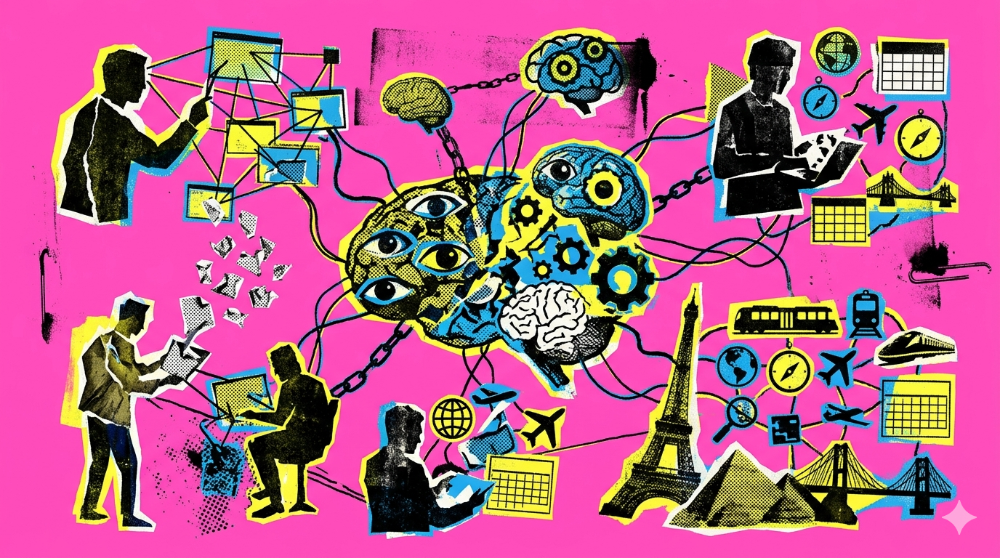

Linguagens de Programação e Banco de Dados
- Python com foco em análise de dados
- Web Scraping com Python
- SQL para extração e manipulação de dados
- R para modelagem estatística
- Banco de Dados Sqlite, PostgreSQL, MySQL e MongoDB
Sou formado em Ciência da Computação pela UFPA e Ciência de Dados pela EBAC.
Atualmente, trabalho como estagiário de engenharia de software na Secretaria Estadual de Administração Penitenciária do Pará (SEAP), desenvolvendo soluções em software e trabalhando com projetos pessoais sobre Ciência de Dados, para adquirir experiência na solução de problemas de negócios e domínio de ferramentas e conceitos da análise de dados.
Estou em busca de uma oportunidade de trabalhar profissionalmente como Cientista de Dados para melhorar a toamda de decisão da empresa, atraves da construção de soluções usando dados.
Abr 2025 - Atual
Jan 2023 - Mar 2025
Fev 2022 - Dez 2022

Aplicação baseada em IA Generativa e modelos de linguagem (LLMs) para geração automática de roteiros de viagem personalizados. Desenvolvimento de API em Python com FastAPI para geração automatizada dos roteiros; implementação de arquitetura multiagente com CrewAI. Integração de modelos de linguagem via Groq e uso da API Tavily para busca de informações na web.

Projeto end-to-end de Machine Learning para predição de risco de diabetes focado na aplicação de boas práticas de MLOps. Desenvolvimento do ciclo de vida completo do modelo, abrangendo análise exploratória de dados (EDA), engenharia de features, treinamento, rastreamento de experimentos com MLflow e versionamento de dados e código utilizando DVC e Git, garantindo a reprodutibilidade e a escalabilidade da solução analítica.

Aplicação web interativa para análise e classificação de emoções em textos. Backend desenvolvido com Flask (API) para integrar e avaliar duas abordagens avançadas de Processamento de Linguagem Natural (NLP): um modelo de redes neurais treinado com a arquitetura BERT e um classificador baseado em Modelos de Linguagem de Grande Escala (LLMs), permitindo a comparação de resultados em tempo real.

Aplicação de Processamento de Linguagem Natural (NLP) desenvolvida para identificar e classificar emoções em textos, utilizando técnicas de aprendizado de máquina. Desenvolvimento de pipeline de pré-processamento de texto (limpeza, normalização e tokenização) e implementação de modelo de classificação utilizando Python e bibliotecas de ciência de dados.
Sinta-se à vontade para entrar em contato